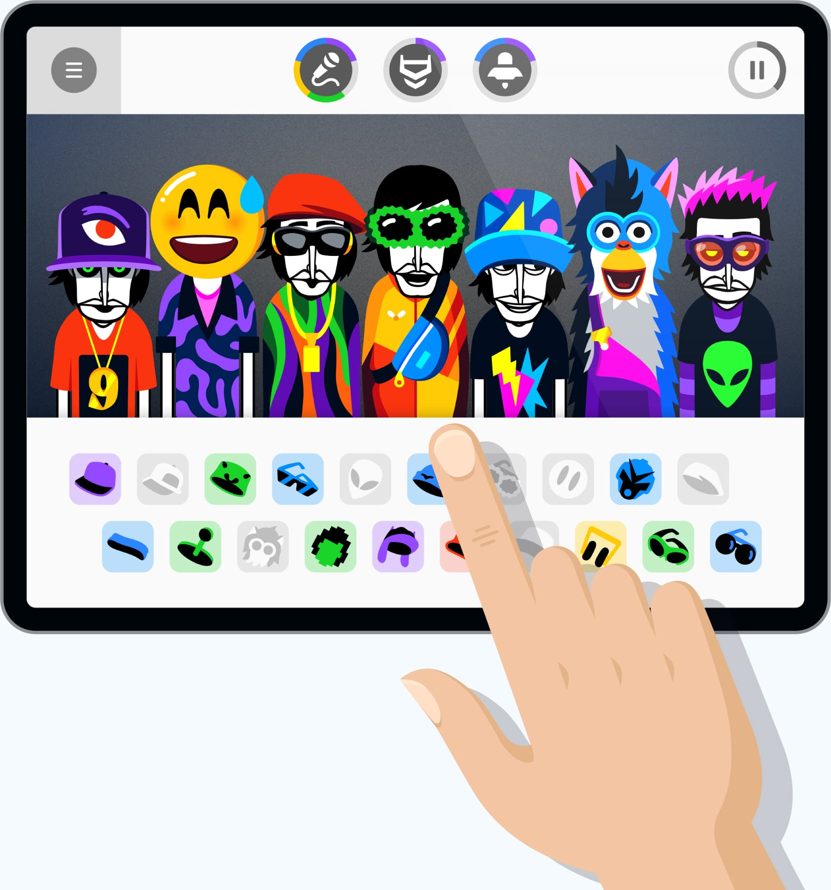

Incredibox 看着简单，用起来这几个坑你一定要避开
Incredibox 玩法直观、界面漂亮，但系统版本门槛、Mod 兼容性、混音分享有效期这些隐形陷阱踩过才知道疼。从闪退到黑屏，从装不上到打不开，逐一拆解每个坑的症状和急救方案。
开头：这个"一个人就能搞出整个乐队"的游戏，看着没门槛，其实藏了好几道隐形墙
第一次接触 Incredibox官网 是在它的网页试玩版——黑白剪影风格的角色站成一排，点一下就张嘴出 beatbox 声音，角色穿不同衣服切换声部，几秒就能拼出一段像样的节奏。这种"零门槛玩音乐"的体验让人上头，我第一反应就是赶紧装 App 随时随地玩。

但真装到手机上之后，连续翻了好几个跟头。先是新功能按钮灰着点不动，然后是卸载重装搞不定的闪退，后来又踩了分享链接过期的坑，最后 Mods 折腾了两天才搞明白版本兼容问题。
这篇就聊聊我踩过的这几个坑，提前知道能省你不少时间。
坑一：新功能按钮灰了？不是花钱没到位，是系统版本卡着
症状：点开 App 之后，V9 Wekiddy 版本或者 Incredimods 的入口是灰的，点了没反应。你明明已经买了完整版，看着那些按钮就是用不了，第一反应可能是"是不是我没付费成功"或者"App 出 bug 了"。
原因：不是钱的问题，是设备系统版本不够。Incredibox 在持续迭代构建工具，新版本的音乐引擎和 Mods 功能对系统版本有硬要求。官方给的门槛很明确：
| 系统 | 能玩什么 | 需要版本 |
|---|---|---|
| iOS | 全部九个版本 + Mods | iOS 15.6+ |
| iOS | 只能玩 V1-V8 | iOS < 15.6 |
| Android | 全部九个版本 + Mods | Android 7.0+ |
| Android | 只能玩 V1-V8 | Android < 7.0 |
我之前那台老 Android 是 6.0，装完 App 直接傻眼——九个版本只解锁了八个，Mods 入口根本没出现。一开始以为是 App 版本不对，反复卸载重装、换渠道下载，折腾了半小时才想起看系统版本表。
解法：先确认设备能不能升级系统。iOS 用户相对好办，iPhone 7 及以后的机型基本都能升到 iOS 15.6 以上。Android 用户就得看厂商给不给更新了——如果手机太老没有官方 OTA，要么考虑换设备，要么就老老实实用 V1 到 V8，这八个版本本身内容也足够丰富。
坑二：闪退黑屏打不开？别光怪 App，先搞清楚到底是哪一层坏了
症状：点开 App 图标之后闪一下就退回到桌面，或者卡在启动页黑屏不动。这种情况最容易让人暴躁，尤其是你刚才还好好的突然就不行了。
原因：可能的根因其实有好几个，我列一下排查顺序：
第一优先级：设备存储空间不足这个是我踩过的最蠢的一个坑。手机剩的空间不到 500MB 了，Incredibox 每次启动要写临时缓存，空间不够直接崩。清了点照片之后立马正常。建议至少给它留 1GB 以上的空间。
第二优先级：安装包损坏如果你是从非官方渠道下载的 APK，有可能下载过程中文件损坏。官方给的Incredibox下载渠道还是值得信的。卸载之后重新下载再装一遍，这个能解决大概一半的黑屏问题。
第三优先级：系统级 bug iOS 和 Android 都有过某些版本系统导致特定 App 闪退的情况。官方推荐的修复流程在Incredibox文档里也有完整步骤：先更系统到最新版 → 卸载 Incredibox → 重启设备（iPhone 有专门的重启流程，Android 长按电源键）→ 重新安装。我试过一次，看起来跟重启没关系，但就是在设备重启之后 App 才正常起来。玄学，但有用。
第四优先级：性能问题如果不是闪退而是播放声音的时候卡顿、断断续续，关掉后台其他 App 再试。Incredibox 虽然只是个"点按钮出声音"的游戏，但要同时渲染九个角色的动画加九轨道音频，低端机型后台挂着微信、浏览器再开几个，确实容易掉帧。
坑三：Mod 导入失败？不是你不会装，是版本不对
症状：兴冲冲在社区找了一个 Incredimod，下载完导入的时候要么报"文件损坏"，要么导入完了 App 里找不到。第一次遇到时我以为是文件本身有问题，反复换下载源、换 Mod，折腾了快俩小时。
原因：Incredimods 是 2025 年 3 月才正式纳入 App 的，而且每个 Mod 都有它兼容的 App 版本号。如果你手机上的 Incredibox 版本太旧（比如还是 2024 年的老版本），装 2025 年的新 Mod 就会失败。反过来也一样——某些老 Mod 可能还没适配新的 App 版本。
另外还有两种常见情况：一是你手动导入的 Mod 文件本身下载不完整，看起来几百 KB 实际上一半是空的；二是 App 内直接安装 Mod 需要联网，如果当时网络差，下载到一半断了，导入自然失败。
解法：先确认 App 已更新到最新版，再仔细看 Mod 的说明页——大多数 Mod 作者都会标注兼容的 Incredibox 版本范围。如果还是不行，换个网络重下一遍 Mod 文件再试。官方在这点上做得不算好，导入失败的报错信息太笼统，只会说"导入失败"，不会告诉你具体是版本问题还是文件问题。
坑四：分享链接别人打不开？不是网络问题，是混音过期了
症状：你精心编了一段混音，生成分享链接发给朋友，朋友打开显示"混音不存在"或者"混音已删除"。第一反应是链接复制错了，重新发一次还是不行。
原因：这个坑主要出现在网页版。网页版免费用户的混音三个月后会被自动清理，付费版和 App 内创建的混音有不同的保留策略。另外还有两种情况：一是你自己手动删了或者违规内容被官方清了；二是分享链接确实复制不完整——尤其是在微信、QQ 这些 App 里发的时候，长链接容易被截断。
解法：用 App 内部分享功能生成的链接相对稳定一些。网页版的混音如果想长期留着，最好把编曲录成视频或者音频保存下来，别指望云端永久存在。另外发链接的时候别用纯文本，直接用 App 内置的分享按钮，能自动处理好完整复制的问题。
防坑清单（30 秒速查）
- 装之前先看系统版本：iOS 15.6+ / Android 7.0+ 才能玩全九个版本和 Mods，老设备提前打预防针
- 闪退黑屏四步走：清空间 → 卸 App → 重启设备 → 重装，别跳过"重启设备"这一步
- 装 Mod 先查版本：Mod 说明页标了兼容的 App 版本号，对不上就别装
- 分享链接别当永久存储：网页版混音三个月自动清理，好作品录一份本地备份
- 非官方渠道下载需谨慎：安装包损坏导致的黑屏问题挺常见，Incredibox下载还是优先官方来源
最后一句话
知道这些坑之后，这软件其实相当省心——玩法简单、视觉漂亮、单人乐队的概念也独特。毕竟一个只有三个人的法国小团队能把一个 beatbox 游戏做十几年，本身就挺不容易的。我整理的这套中文资料也方便不同网络环境下查阅，在GitHub、Gitee、GitCode三个仓库里都同步了一份。